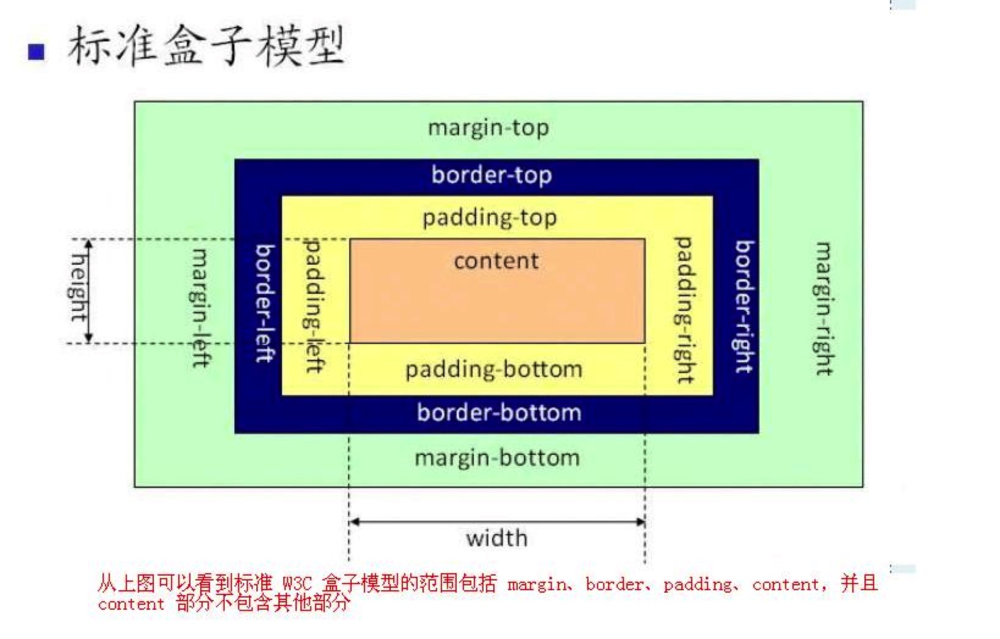
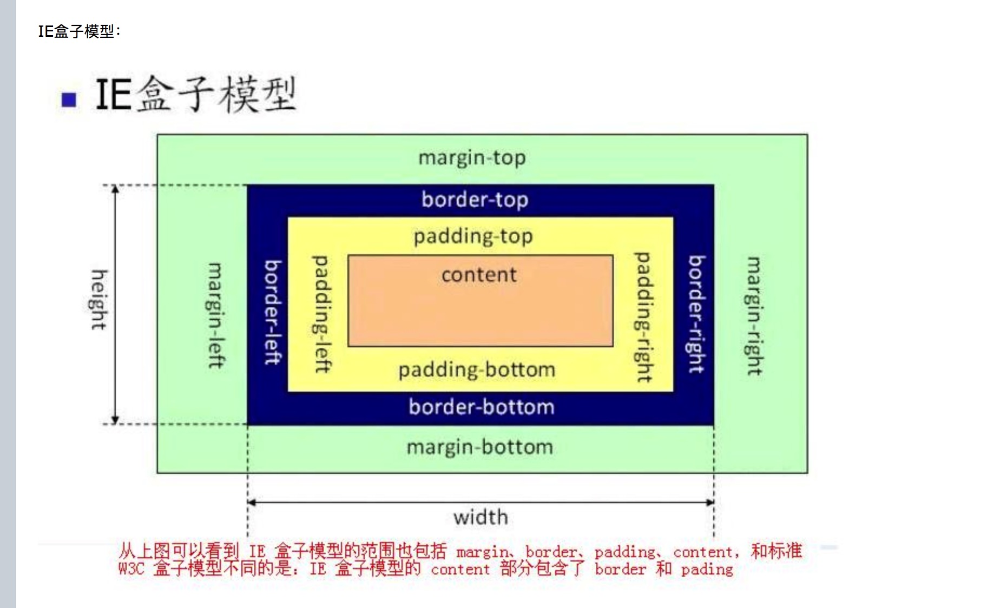

盒模型
分类？
盒模型 有两种：
1 标准盒模型；
2 IE 盒模型；
组成？
组成： content border padding margin;区别？


从两图可以看出： 标准盒模型的 width 和 height 是指content 的宽度和高度,而 IE 的 width 和 height 包括 padding ,border ,content
js如何获取width 和 height ？
标准盒模型的width 和height :
dom.style.height/width = xxxx;